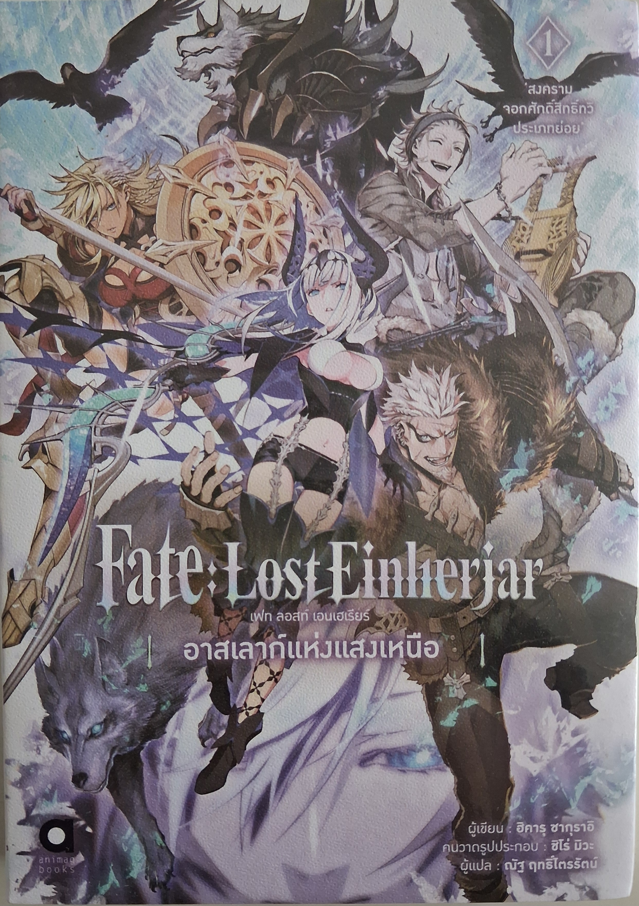
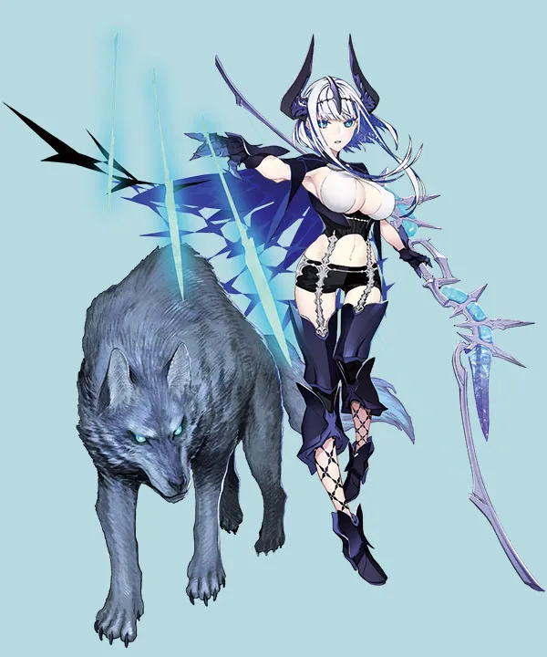
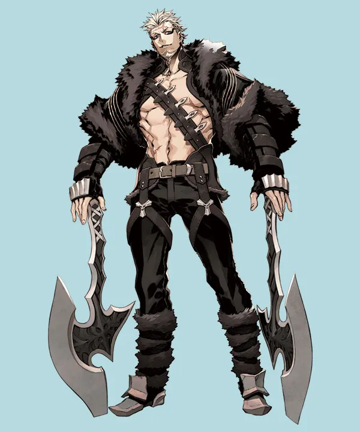
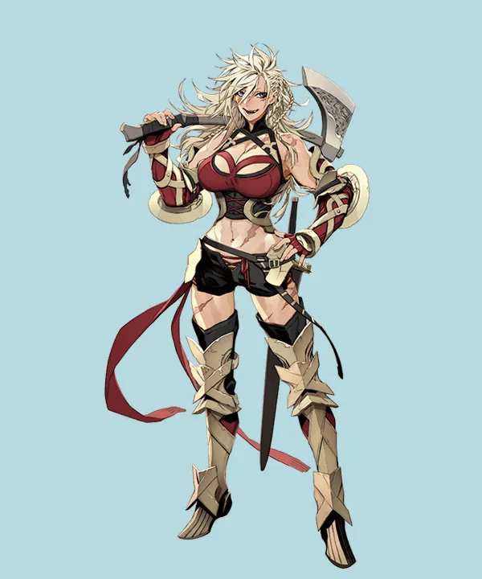
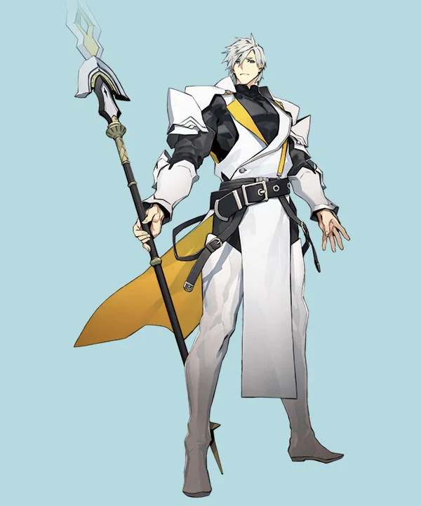

ศตวรรษที่เก้า ยุโรปเหนือ ณ คาบสมุทรสแกนดิเนเวีย
สิ่งที่เฝ้ารอเด็กสาวผู้หลับใหลโดยมีพิณยักษ์เงินมนตราเป็นเปล และลืมตาตื่นผ่านช่วงเวลาที่แสนยาวนานมา คือโลกแห่งประวัติศาสตร์มนุษย์ที่ไร้ซึ่งทวยเทพ
ชื่อของเด็กสาวคืออาสเลาก์ ลูกสาวของซิเกิร์ดผู้ฆ่ามังกรและวัลคีรีย์บรุนฮิลด์
ช่วงเวลาของเด็กสาวที่ใช้ชีวิตอยู่อย่างลับๆ ได้แปรเปลี่ยนไปเมื่อถึงเหตุการณ์หนึ่ง และนั่นคือการพบพานกับนักรบผู้กล้าชาวไวกิ้งที่ไม่หวาดกลัวสิ่งใด และว่าที่ราชาในอนาคต แรกนาร์ ลอธบรอค
และในคริสต์ศักราชที่ 201X ยุโรปเหนือ เมืองหลวงออสโลของนอร์เวย์
อาสเลาก์กับแรกนาร์ถูกอัญเชิญมาในฐานะอาวุธลี้ลับเพื่อฆ่าฟัน ในพิธีกรรมเวทมนตร์สงครามจอกศักดิ์สิทธิ์ทวิประเภทย่อย เป็นครั้งแรกในประวัติศาสตร์
และช่างน่าแปลก
ที่นั่นคือการพบเจอกันระหว่างวัลคีรีย์คนสุดท้าย และเอนเฮเรียร์คนสุดท้าย หลังกาลเวลาล่วงเลยไปกว่าพันปี

Aslaug of the Aurora
(อาสเลาก์แห่งแสงเหนือ)
Ragnar Lodbrok
(รักนาร์ ล็อดบรอค)
Lagertha
(ลาเกอทาร์ สตรีแห่งโล่)
Sir Percival
(เซอร์ เพอซิวัล)โดยส่วนตัวแล้วเป็นแฟนของซีรี่ย์ Fate อยู่แล้วโดยเริ่มต้นมาจากอนิเมะ Fate/stay night จนมาถึงการได้ลองเล่นเกม Fate/Grand Order ด้วยความที่ในเนื้อเรื่องมีการประยุกต์บุคคลในประวัติศาสตร์ให้มาอยู่ในรูปแบบของ servant เพื่อมาสู้กันในสงครามจอกศักดิ์สิทธิ์ อย่างในเล่มที่ยกมาในเป็นแบบไลท์โนเวล คือ Fate : Lost Einherjar ด้วยการเขียนบทของคุณ ฮิคารุ ซากุราอิ นักเขียนผู้มีผลงานกับค่าย TYPE-MOON เช่น Fate/Prototype , Fate/Samurai Remnant , และเป็นหนึ่งในผู้เขียนบทหลักของ Fate/Grand Order บวกกับ อาจารย์ชิโร่ มิวะ ที่เป็นผู้วาดภาพประกอบ ทำให้หนังสือเล่มนี้ เป็นอีกเรื่องที่น่าหยิบมาอ่านมากๆ